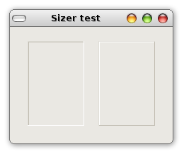
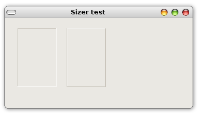
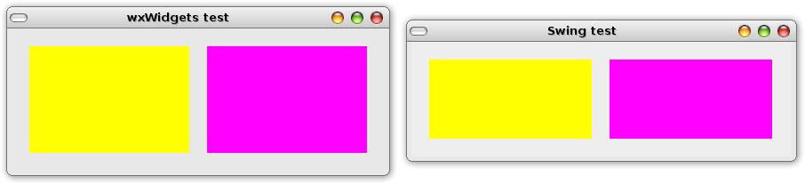
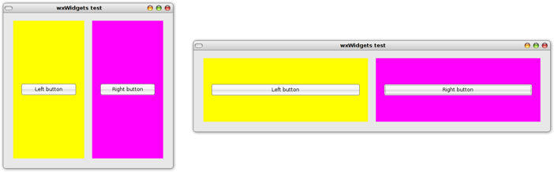
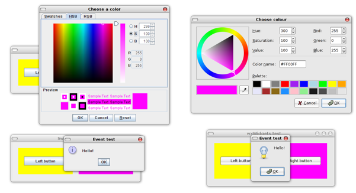
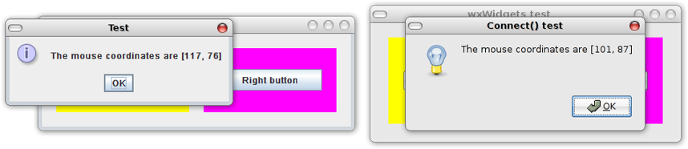

wxWidgets for Swing Developers
Index
- About
- How this tutorial came about
- Basic setup
- Installing wxWidgets
- Setting up NetBeans
- The main class
- The top frame
- Widgets & Sizers - Absolute Layout
- Widgets & Sizers - Flexible Layout
- Event handling - Event Tables
- Event handling - Connect()
- Resources
- Conclusion
About
This comparative tutorial aims to make the bridge between wxWidgets and Swing to allow for Swing developers to use their experience to learn the toolkit. Unlike other tutorials that assume some familiarity with C++ GUI toolkits, it focuses on aspects that might be tricky or unusual to developers accustomed to Swing, deliberately bypassing distracting or repetitive instructions. Once the differences are digested and the basics are grasped, wxWidgets will become familiar and you will be able to proceed on your own without problems.
How this tutorial came about
While in college, I've played with C++ driven by pure curiosity, reimplementing data-structures to learn the basics of the language. However, there was a frustrating aspect about this exploration, as the results of my efforts were mere kid-play compared to what I could do in Java at the time. Moreover, data-structures exposed me to only a narrow subset of programming problems compared to what one usually finds while developing non-trivial GUI applications. Wherever I looked for the source code of a GUI application written in C++, the code would seem alien to me. I shied away from C++ for years until about a year after my graduation, when I was invited for a C++ project that used wxWidgets as the GUI toolkit.
Having wxWidgets as my first real C++ "programming canvas" taught me that I learn much more when I'm doing something useful with what I'm learning. This reward is encouraging and leads to more exploration, which leads to more rewards, ad infinitum. wxWidgets may very well be the difference between knowing something of C++ or nothing at all for developers who would never consider learning the language without being able to create GUIs with it. If you are inexperienced in C++ and if you never considered developing a GUI application with it, wxWidgets might give the momentum you need to explore more features of the language, as well as opening your mind to the advantages of C++ when it comes to desktop applications.
Basic setup
I use the configuration below throughout this tutorial:
- wxWidgets 2.6
- NetBeans IDE - you may also use the trendier Eclipse or any other IDE of your choice if you know how to build C++ applications with it
- GCC 4.1.2 - I don't guarantee everything will work on other versions
- Any linux flavor - you may use wxWidgets in other platforms, but this tutorial will focus on the GTK build; note that the Windows build has a different setup I will not cover here
You may change the setup as you wish, but you will need to know what you are doing. This tutorial does not require advanced C++ skills, but if you feel you need to put yours in shape, this website is the best I know for this purpose.
Installing wxWidgets
Note: if your wxWidgets is properly installed and configured, you can skip this section.
The first thing you need to do is to make sure wxWidgets is properly installed and configured. You can easily check the status of your installation by compiling and linking the hello world found on wxWdidgets' website (the compile and link command is right at the bottom). Please don't try this on your IDE at this point because it might introduce path configuration problems. If it does not compile or link, something might be wrong with your setup. You might want to try the wx-config --cxxflags and wx-config --libs commands to see if they output anything.
I must admit I had a tough time using wxWidgets for the first time on my machine because the automated installation provided by my Ubuntu did not install it correctly. A manual installation solved everything. If you need to compile wxWidgets as I had, the instructions that come with the sources are very clear and should present no problems to get going. You should look for support on Google or support forums if you still have problems at this point.
Setting up NetBeans
In this section we will create a new C++ project on NetBeans, as well as configuring the compiler and linker flags for the program. As the C\C++ Development Pack is not bundled by default with NetBeans, you need to download and install it if you don't have it already. Once you have it installed, follow the steps below:
- File --> New Project... [Ctrl + Shift + F]
- Select C/C++ Project | C/C++ Application on the New Project dialog [screenshot]
- Fill in the New C/C++ Application dialog fields [screenshot]
With the project already created, the compiler and linker options need to be set-up. wxWidgets needs libraries and include directories that would be a strain to configure manually, but fortunately it comes with a small utility program that outputs all those directories and other options. You should use it to configure compiler and linker options:
wxWidgets compiler options
- Right click on project name on the Projects panel --> Properties
- On the Project Properties dialog select C/C++ --> C++ Compiler --> Command Line
- Add `wx-config --cxxflags` to the list of additional options
wxWidgets linker options
- On the Project Properties dialog select C/C++ --> Linker --> Command Line
- Add `wx-config --libs` to the list of additional options
Now the project is almost configured, but you still have to decide whether you will put all headers and sources in separate directories or not. If you choose the former, be sure to include the headers directory in the list of include directories (C/C++ --> C++ Compiler --> General in the Project Properties dialog). You will see a folder for source files and another for header files in the projects panel, but these don't map to any folder in your disk, so make sure you add header and source files to their appropriate directories whenever you create or add these files to your project.
The main class
You know that in C, C++ and Java every program starts in main(), however, if you take a look at the source code of many wxWidgets applications, you won't find main(). This is not an obscure C++ hack, it's just a simple indirection, after all, nothing implies that you should always create your own main(). For example: a Java desktop framework may create its own main() and call an interface implemented by you during start-up. wxWidgets has a similar approach, although it still allows you to create your own main() if you will, though this is usually not recommended because it's less portable. This section will use the recommended way, though you can see how to use your own main() if you're interested.
To create a wxWidgets application without a main(), you have to derive the wxApp class and override the OnInit() method. That's it! The listing below demonstrates how simple it is:
my_app.h
#ifndef _MY_APP_H
#define _MY_APP_H
#include <wx/app.h>
class MyApp : public wxApp {
virtual bool OnInit();
};
#endifmy_app.cc
#include "my_app.h"
bool MyApp::OnInit() {
return true;
}
IMPLEMENT_APP(MyApp);You should include these on your project, and after that it should build without problems, but before you try to run it, you should be aware of the following quirks:
- return type of OnInit() — an OnInit() with nothing besides a return false statement is equivalent to main() with an exit(1) only, whereas return true as the only statement in OnInt() yields a zoombie program that does nothing besides waiting to be killed;
- IMPLEMENT_APP — this macro creates the main() function for you and invokes your overridden OnInit(). You can check the header of wxApp if you're curious about what this macro does, or if you want to check for alternative macros. You must declare this macro if you're not going to provide your own main(), and this declaration must be in the implementation section of your wxApp derived class (for the same reason you don't put main() in the header). For instructions on how to create a wxWidgets program with your own main(), check this page;
- argc and argv — if you need argc and argv, wxApp has homonymous instance variables you can use anywhere in your wxApp implementation;
- #include <wx/app.h> — to find out which header corresponds to which class, just check the "included files" section of the API doc of the class in question. If you are unsure of which class to pick, try picking a class by its category. You can also try using the generic <wx/wx.h> if you want to take advantage of precompiled headers or if you want to make your refactorings a little easier.
You may download the source code of this section.
The top frame
Now it's time to show a frame. You know that in Java you can either construct a JFrame and set its properties externally or you can derive a JFrame and set its properties internally. In wxWidgets you can also create a wxFrame both ways, with the choice depending on how you want to encapsulate the widgets contained by the frame. The listings below compare the external configuration style in wxWidgets and Swing:
External configuration of wxFrame
#include "my_app.h"
#include <wx/frame.h>
bool MyApp::OnInit() {
wxFrame *frame = new wxFrame((wxFrame*) NULL, wxID_ANY, _T("Hello world"), wxPoint(100, 100), wxSize(320, 240));
frame->Show(true);
return true;
}
IMPLEMENT_APP(MyApp);External configuration of JFrame
import javax.swing.JFrame;
public class MyApp {
public static void main(String[] args) {
JFrame frame = new JFrame("Hello world");
frame.setBounds(100, 100, 320, 240);
frame.setDefaultCloseOperation(JFrame.EXIT_ON_CLOSE);
frame.setVisible(true);
}
}As expected, you will see a window if you try to build and run the program. Before moving on to the internal configuration style (which will be used throughout this tutorial), I need to explain 3 parameters on wxFrame's constructor that might look peculiar from a Swing developer's perspective:
{kind=link}
- (wxFrame*) NULL — in Swing you never assign parents to top level containers, whereas wxFrame requires you to define one since wxFrame is not a "top level container" in the Swing sense of the word. Use (wxFrame*) NULL whenever you need to indicate that the window does not have a parent. You might want to use wxApp's setTopWindow() as well. You need to do that cast for portability issues;
- wxID_ANY — in Swing you don't have to provide IDs for components, and if you need some identification, you would probably use Component's setName(). In wxWidgets you have the choice of providing an ID of your own or letting wxWidgets choose the ID with wxID_ANY. If you want to provide the ID yourself, it must be smaller than wxID_LOWEST and greater than wxID_HIGHEST to be valid. But why, after all, you need to provide an ID? Answer: because wxWidgets' event handling system needs them to assign behaviors to components. This may seem obvious to programmers not used to the listener model for event handling, but as a Swing developer just make sure you understand that there's no addFooListener() in wxWidgets. We'll see that in more detail on the event handling section;
- _T("Hello world")— you know it's just the window title, but note the _T() macro: you need it to convert your strings to unicode (in case you compile with unicode support). In the case you compile your program without unicode support, this macro is harmless, so you better always use it to avoid possible nightmares.
With enough explanations given for the wxFrame constructor, it's time to use the wxFrame derivation strategy that we are going to use from now on:
my_frame.h
#ifndef _MY_FRAME_H
#define _MY_FRAME_H
#include <wx/frame.h>
class MyFrame : public wxFrame {
public:
MyFrame(const wxString &title);
};
#endif /* _MY_FRAME_H */myframe.cc
#include "my_frame.h"
MyFrame::MyFrame(const wxString &title) : wxFrame((wxFrame*) NULL, wxID_ANY, title) {
}If you tried the external configuration style presented on the beginning of this section, you should replace it for the code below if you are following this tutorial:
myframe.cc
#include "my_app.h"
#include "my_frame.h"
bool MyApp::OnInit() {
MyFrame *frame = new MyFrame(_T("First frame"));
frame->Show(true);
return true;
}
IMPLEMENT_APP(MyApp);You may download the source code of this section.
Widgets & Sizers - Absolute Layout
Adding widgets in wxWidgets using an absolute layout is very different from Swing. The first notable difference is that you should define the parent of a component on its constructor instead of using a method like add(Component). As we will see on the next section, you will use a method that do resembles Component's add(Component) when you use a layout manager in wxWidgets, but you still have to define the parent of the component when you construct it. The second difference is that all widgets use absolute layout by default, unlike Swing where every component has its own default layout manager. The final notable difference is that if you are not going to use a layout manager (a.k.a. sizer in wxWidgets), constructing the component is enough to add it to its parent (because it is defined on the child's constructor). The code sample below illustrates this concept:
Adding two panels - Absolute layout - wxWidgets
#include <wx/panel.h>
MyFrame::MyFrame(const wxString& title) : wxFrame((wxFrame*) NULL, wxID_ANY, title) {
new wxPanel(this, wxID_ANY, wxPoint(20, 20), wxSize(80, 120), wxSUNKEN_BORDER);
new wxPanel(this, wxID_ANY, wxPoint(120, 20), wxSize(80, 120), wxRAISED_BORDER);
}Adding two panels - Absolute layout - Swing (Java 6 version)
public MyFrame(String title) {
super(title);
JPanel panel1 = new JPanel();
JPanel panel2 = new JPanel();
panel1.setBounds(20, 20, 80, 120);
panel2.setBounds(120, 20, 80, 120);
panel1.setBorder(BorderFactory.createLoweredBevelBorder());
panel2.setBorder(BorderFactory.createRaisedBevelBorder());
setLayout(null);
add(panel1);
add(panel2);
}Sample results - wxWidgets

Fig. 1. Widgets are not resized if you use absolute layout
It is clearly visible that wxWidgets makes it very easy to configure components in absolute layouts. Note, however, that absolute layouts are rarely suitable for anything other than throw-away programs. Before we move into more flexible layouts, let's take a look at some arguments I used on the wxPanel's constructor:
- this — the first argument determines the parent of the widget, in this case, a pointer to MyFrame (a derivation of wxFrame). This is the equivalent to Component's add(Component) method;
- wxSUNKEN_BORDER, wxRAISED_BORDER — most widgets in wxWidgets provide styling facilities on their constructors, many of which can be inherited from their parents. These border styles in particular were inherited from wxWindow.
You can try variations with other widgets to see how they behave and what styles are available for them. You may download the source code of this section.
Widgets & Sizers - Flexible Layout
The previous section demonstrated how to add panels into a frame using no layout manager, but for the most part you want your layout to adjust gracefully to resizing. This is when sizers (the equivalent to Swing's layout managers) come into play. This section will demonstrate this by adding two panels to a frame, where both panels have to share the space of the frame equally and maintain a fixed distance of 20 pixels from each other and from the frame's borders. Both the panels and the frame have to maintain a minimum size as well. The code samples below demonstrate this layout in Swing and wxWidgets:
Layout configuration - Two panels - Swing
public MyFrame(String title) {
super(title);
initOutterPanels();
}
private void initOutterPanels() {
leftPanel = new JPanel();
rightPanel = new JPanel();
leftPanel.setBackground(Color.YELLOW);
rightPanel.setBackground(Color.MAGENTA);
leftPanel.setMinimumSize(new Dimension(180, 120));
rightPanel.setMinimumSize(leftPanel.getMinimumSize());
leftPanel.setPreferredSize(leftPanel.getMinimumSize());
rightPanel.setPreferredSize(leftPanel.getMinimumSize());
setMinimumSize(new Dimension(420, 160));
JPanel container = new JPanel();
container.setLayout(new BoxLayout(container, BoxLayout.X_AXIS));
container.add(leftPanel);
container.add(Box.createHorizontalStrut(20));
container.add(rightPanel);
add(container, BorderLayout.CENTER);
add(Box.createVerticalStrut(20), BorderLayout.SOUTH);
add(Box.createVerticalStrut(20), BorderLayout.NORTH);
add(Box.createHorizontalStrut(20), BorderLayout.WEST);
add(Box.createHorizontalStrut(20), BorderLayout.EAST);
}Layout configuration - Two panels - wxWidgets
#include <wx/sizer.h> // other includes are in previous examples
MyFrame::MyFrame(const wxString &title)
: wxFrame((wxFrame*) NULL, wxID_ANY, title),
leftPanel(NULL),
rightPanel(NULL) {
initOutterPanels(); // Declare this method in the header
}
void MyFrame::initOutterPanels() {
wxBoxSizer *sizer = new wxBoxSizer(wxHORIZONTAL);
// Declare these panels and IDs in the header
leftPanel = new wxPanel(this, wxID_LEFT_PANEL);
rightPanel = new wxPanel(this, wxID_LEFT_PANEL);
leftPanel->SetBackgroundColour(wxColour(255, 255, 0));
rightPanel->SetBackgroundColour(wxColour(255, 0, 255));
leftPanel->SetMinSize(wxSize(180, 120));
rightPanel->SetMinSize(wxSize(180, 120));
sizer->SetSizeHints(this);
sizer->Add(leftPanel, true, wxEXPAND | wxTOP | wxBOTTOM | wxLEFT, 20);
sizer->AddSpacer(20);
sizer->Add(rightPanel, true, wxEXPAND | wxTOP | wxBOTTOM | wxRIGHT, 20);
SetSizer(sizer);
}Sample results

Fig. 2. The minimum size of the frame is automatically calculated from the minimum size of child
sizers in wxWidgets; Swing, on the other hand, requires you to guess define this size manually
As you can see, it took more lines of code to get the same result in the higher level Swing. To make things worse, in Swing I had to use another container to achieve the same result and the added struts do not use the system color. I would have to spend even more lines of code to make each strut transparent. Comparisons aside, let's briefly analyze the wxWidgets code to see how the layout specifications translate to Swing:
- wxBoxSizer(wxHORIZONTAL) — the equivalent to BoxLayout's X_AXIS, while wxVERTICAL is the equivalent to BoxLayout's Y_AXIS;
- wxPanel(this, wxID_LEFT_PANEL) — as in the Swing code, there was no need to configure size and location since the layout to be used is not absolute, however, since the next section will handle events of this panel, I had to define an ID (remember to include it in your header or download the source code of this section if you are in doubt);
- sizer->SetSizeHints(this) — makes the minimum size of the parent (in this case, this) match the minimum size of the sizer. You must use this method if you don't want to allow the parent of the sizer to become smaller than the minimum size of the sizer;
- sizer->Add(leftPanel — as previously mentioned, you define the parent of the widget on its constructor, not here. This argument merely adds the component to the sizer's "responsibility", the sizer does not become the parent;
- (cont.) true — allows the component to expand horizontally, whereas false would maintain the component on its minimum size horizontally. Note that if the sizer were vertical, the rules would apply vertically instead of horizontally;
- (cont.) wxEXPAND — same as above, but vertically: using wxEXPAND implies that the widget can expand vertically, whereas not using it retains the component on its minimum size vertically. If the sizer were vertical, the rules would apply horizontally;
- (cont.) wxTOP | wxBOTTOM | wxLEFT, 20 — check the documentation of wxSizer's add() for a detailed explanation of each flag. The wxTOP, wxBOTTOM and wxLEFT define where the margins of the left panel should be, while the last argument defines the length of this margin. Note that I did not use wxRIGHT because a spacer was added on its right, and for the same reason I did not use wxLEFT on the right panel;
- SetSizer(sizer) — the equivalent to Swing's setLayout(...)
Now, to finish this section, let's add one button to each panel. The buttons have to maintain a minimum size while still being able to stretch horizontally. They have to keep centered on the panels and should preserve a minimum distance of 20 pixels from their parent's borders. The following code samples implement these requirements in Swing and wxWidgets:
Layout configuration - Two buttons - Swing
public MyFrame(String title) {
super(title);
initOutterPanels();
initButtons();
}
private void initButtons() {
leftButton = new JButton("Left button");
rightButton = new JButton("Right button");
leftButton.setMinimumSize(new Dimension(130, 30));
rightButton.setMinimumSize(leftButton.getMinimumSize());
leftButton.setPreferredSize(leftButton.getMinimumSize());
rightButton.setPreferredSize(leftButton.getMinimumSize());
GridBagLayout gridbag = new GridBagLayout();
GridBagConstraints c = new GridBagConstraints();
c.weightx = 1.0;
c.fill = GridBagConstraints.HORIZONTAL;
c.insets = new Insets(20, 20, 20, 20);
leftPanel.setLayout(gridbag);
rightPanel.setLayout(gridbag);
gridbag.setConstraints(leftButton, c);
gridbag.setConstraints(rightButton, c);
leftPanel.add(leftButton);
rightPanel.add(rightButton);
}Layout configuration - Two buttons - wxWidgets
MyFrame::MyFrame(const wxString &title)
: wxFrame((wxFrame*) NULL, wxID_ANY, title),
leftPanel(NULL), rightPanel(NULL), leftButton(NULL), rightButton(NULL) {
initPanels();
initButtons();
}
void MyFrame::initButtons() {
// Declare these buttons and IDs in the header
leftButton = new wxButton(leftPanel, wxID_LEFT_BUTTON, _T("Left button"));
rightButton = new wxButton(rightPanel, wxID_RIGHT_BUTTON, _T("Right button"));
wxBoxSizer *leftSizer = new wxBoxSizer(wxVERTICAL);
wxBoxSizer *rightSizer = new wxBoxSizer(wxVERTICAL);
leftButton->SetMinSize(wxSize(130, 30));
rightButton->SetMinSize(wxSize(130, 30));
leftSizer->AddStretchSpacer();
leftSizer->Add(leftButton, false, wxEXPAND | wxALL, 20);
leftSizer->AddStretchSpacer();
rightSizer->AddStretchSpacer();
rightSizer->Add(rightButton, false, wxEXPAND | wxALL, 20);
rightSizer->AddStretchSpacer();
leftSizer->SetSizeHints(leftPanel);
rightSizer->SetSizeHints(rightPanel);
leftPanel->SetSizer(leftSizer);
rightPanel->SetSizer(rightSizer);
}Sample results [wxWidgets]

Fig. 3. Centered buttons with fixed height and variable width
The code in this section may not be very useful, but it's more than enough for you to start using sizers. Note that the goal here is comprehension: once you get the idea of how the box sizer works in wxWidgets, you can do most of your layouts with simple compositions. Other methods of wxSizer are very similar to their equivalents in Swing and should pose no problems for you to understand.
You may download the documented source code of this section.
Event handling - Event Tables
If you have ever written any sizeable Java desktop program, you have probably written tons of event handling classes. A Java class may contain dozens of inner classes piled over each other to handle events of an arbitrary number of components. While this may sound familiar to you, this style of event handling is still weird to many people. It may have been strange to you while you were learning Java, but at this stage of the game this is probably a long forgotten impression. Event handling in wxWidgets is something that will bring back that awkward feeling, but as soon as it pass it will look just as natural as event handling in AWT/Swing.
wxWidgets offers more than one way to write event handling code. The most traditional one is based on event tables, which are preprocessor macros where you associate an event with a handler method. The following code samples demonstrate simple event handling in Swing and its equivalent in wxWidgets using event tables:
Event handling - Swing
public MyFrame(String title) {
super(title);
initOutterPanels();
initButtons();
initListeners();
}
private void initListeners() {
leftButton.addActionListener(new LeftButtonListener());
rightButton.addActionListener(new RightButtonListener());
}
private void changeParentPanelColor(ActionEvent event) {
JButton button = (JButton) event.getSource();
Container panel = button.getParent();
Color color = JColorChooser.showDialog(panel, "Choose a color", panel.getBackground());
panel.setBackground(color);
}
private void showHelloMessage(ActionEvent event) {
JButton button = (JButton) event.getSource();
JOptionPane.showMessageDialog(button, "Hello!", "Event test", JOptionPane.INFORMATION_MESSAGE);
}
private class LeftButtonListener implements ActionListener {
public void actionPerformed(ActionEvent event) {
changeParentPanelColor(event);
}
}
private class RightButtonListener implements ActionListener {
public void actionPerformed(ActionEvent event) {
changeParentPanelColor(event);
showHelloMessage(event);
}
}Event handling - wxWidgets - my_frame.h
class MyFrame : public wxFrame {
// You may declare this macro anywhere in the class declaration, but you should prefer writing it at the bottom
DECLARE_EVENT_TABLE()
};Event handling - wxWidgets - my_frame.cc
#include <wx/colordlg.h>
#include <wx/msgdlg.h> // other includes are in previous examples
BEGIN_EVENT_TABLE(MyFrame, wxFrame)
EVT_BUTTON(wxID_LEFT_BUTTON, MyFrame::changeParentPanelColor)
EVT_BUTTON(wxID_RIGHT_BUTTON, MyFrame::changeParentPanelColor)
EVT_BUTTON(wxID_RIGHT_BUTTON, MyFrame::showHelloMessage)
END_EVENT_TABLE()
void MyFrame::changeParentPanelColor(wxCommandEvent &event) {
event.Skip();
wxButton *button = static_cast<wxButton*>(event.GetEventObject());
wxWindow *parent = button->GetParent();
wxColour colour = wxGetColourFromUser(parent, parent->GetBackgroundColour());
parent->SetBackgroundColour(colour);
}
void MyFrame::showHelloMessage(wxCommandEvent &event) {
event.Skip();
wxButton *button = static_cast<wxButton*>(event.GetEventObject());
wxMessageBox(_T("Hello!"), _T("Event test"), wxOK | wxICON_INFORMATION, button);
}Sample results - Right button click

Fig. 4. Swing and wxWidgets results, respectively. Note how both toolkits act differently with regard to centralization on the parent (the right button).
Event tables are really easy to use once you grasp the basic rules, which are detailed below:
- DECLARE_EVENT_TABLE() — you should always declare this macro in the class declaration if you are going to use event tables. You should prefer declaring it at the bottom because there might be unexpected results otherwise;
- BEGIN_EVENT_TABLE(MyFrame, wxFrame) — the beginning of the event table, where the two arguments are the class name and the class type;
- EVT_BUTTON — the declaration of an event-handler mapping. EVT_BUTTON is a macro used to map a button click event to a member method that will handle this event. This macro is one of the wxCommandEvent macros, which define event mappings for other event types. In case you're wondering how you are going to find which macro corresponds to which event, have a look at the wxWidgets API docs and search for classes with wxFooEvent names;
- (cont.) (wxID_LEFT_BUTTON, — this is the exact reason why we have assigned IDs to the buttons a few code snippets ago: to map events of this widget to member functions in an event table. Note that not all macros require the ID of the widget that originates the events: some macros like wxSizeEvent's EVT_SIZE assume you are handling resize events of the class for which the event table is declared;
- (cont.) MyFrame::changeParentPanelColor) — the member function that will handle the event. The restrictions for this method are explained in more detailed below in this list. Have a look at the next section for a discussion of this possibility to use methods instead of objects to handle events;
- END_EVENT_TABLE() — guess what... it's the end of the event table :-);
- void MyFrame::changeParentPanelColor(wxCommandEvent &event) — the rules for member functions that handle events have some similarities with listeners' methods in Java, whereas some others are very different: the method must be void (like Java), can have any name (not like Java), must take an argument of the event type it will handle (like Java) and it must not be virtual (not like Java). To find the exact type of the event object you need, use the same strategy you use for finding event macros: look for wxFooEvent classes in the API docs. If the wxFooEvent class declared an EVT_FOO macro, then the member method that will handle this event has to receive a wxFooEvent reference;
- event.Skip() — if you comment this call to see what happens you will see that the next event for this same widget on the table will not be called, i.e., if you comment event.Skip() in changeParentPanelColor(), showHelloMessage() will not be called when you press the right button. You have to call Skip() to make the event processing system to continue to search for another event handler bound to this event. If you think this is boring, you should try using a single method to handle events of a given widget (something like onLeftButtonClicked()). Then, inside the method, you can distribute the event to the appropriate handler methods (pretty much like the way it was done in the Swing example of this section);
- event.GetEventObject() — the equivalent to EventObject's getSource().
You may have noticed that the example contains other features of wxWidgets like a color chooser panel (the equivalent to JColorChooser) and a simple dialog message (the equivalent to JOptionPane). These are explained in more detail in the wxWidgets list of convenience dialog functions.
You may download the documented source code of this section.
Event handling - Connect()
Event tables are great because they are lean and save a lot of typing — but in contrast with what? The other way to handle events: Event's Connect()/Disconnect(). You may wonder why does anyone bother using it if event tables are so advantageous. There are three basic reasons: first, event tables use macros, and that doesn't fit everyone's taste; secondly, event tables do not allow event handling to take place in some other object; finally, event tables are static and do not allow event handlers to be defined at runtime (which is default in Java). With that in mind, one could say that Connect()/Disconnect() are in fact more familiar to a Swing programmer than event tables, and they don't just look familiar, they do allow you to do everything you do with listeners in Java. In spite of all this versatility and power, it eludes me that the official wxWidgets documentation reserves little room to explain the advantages of this style of event handling, even though the authors themselves have done so. Without further ado, let's see how it works.
The following code samples demonstrate a mouse pressed event being handled in Swing and wxWidgets:
Mouse pressed event - Swing
private void initListeners() {
leftButton.addActionListener(new LeftButtonListener()); // Declared in previous examples
rightButton.addActionListener(new RightButtonListener()); // Declared in previous examples
leftPanel.addMouseListener(new LeftPanelMouseListener());
}
private void showMouseCoordinates(MouseEvent event) {
String message = "The mouse coordinates are [" + event.getX() + ", " + event.getY() + ']';
Component parent = (Component) event.getSource();
JOptionPane.showMessageDialog(parent, message, "Test", JOptionPane.INFORMATION_MESSAGE);
}
private class LeftPanelMouseListener extends MouseAdapter {
public void mousePressed(MouseEvent event) {
showMouseCoordinates(event);
}
}Mouse pressed event - wxWidgets [using Connect()]
#include <sstream> // other includes are in previous examples
MyFrame::MyFrame(const wxString& title)
: wxFrame((wxFrame*) NULL, wxID_ANY, title),
leftPanel(NULL), rightPanel(NULL), leftButton(NULL), rightButton(NULL) {
initPanels(); // Declared in previous examples
initButtons(); // Declared in previous examples
initHandlers();
}
void MyFrame::initHandlers() {
leftPanel->Connect(wxEVT_LEFT_DOWN, wxMouseEventHandler(MyFrame::showMouseCoordinates));
}
void MyFrame::showMouseCoordinates(wxMouseEvent &event) {
event.Skip();
wxWindow *parent = static_cast<wxWindow*>(event.GetEventObject());
std::ostringstream oss;
oss << "The mouse coordinates are [" << event.GetX() << ", " << event.GetY() << "]";
wxMessageBox(_T(oss.str()), _T("Connect() test"), wxOK | wxICON_INFORMATION, parent);
}Sample results - Left button press on left panel

Fig. 5. Showing properties of MouseEvent and the analogous wxMouseEvent
The Connect() signature in the example deserves special attention:
- leftPanel->Connect( — left panel is the component whose events you will listen;
- (cont.) wxEVT_LEFT_DOWN — the ID of the event you want to listen. To find this ID, look for a wxFooEvent class on the API docs such as wxMouseEvent (this page has all event classes grouped). On the page, look for the right side of the "Event table macros" table: this is where the event IDs are. Note that these are NOT the same as the macro names, which are not preceded by wx;
- (cont.) wxMouseEventHandler(MyFrame::showMouseCoordinates) — the function that will handle the event, which has to follow all the rules for handler functions discussed on the previous section. The wxMouseEventHandler macro that encloses the function converts this function to the correct type that can handle this event. The rule is pretty simple: for a wxFooEvent you will handle, enclose the function on this argument with a wxFooEventHandler macro.
if there were an exact Java equivalent of Connect() with those arguments, it would be called "addLeftButtonPressedListener()", but there's no such possibility. When you care for a single event, or not all events of the listener API, you derive an adapter like MouseAdapter, which provides void implementations of all API of the listener, allowing you to scope the events you're interested in. Contrastingly, wxWidgets allows for event handling on a per-method basis, which can be quite convenient, but it's not that automagic: the class from which this method is member must derive wxEvtHandler, and the method must follow the rules of event handler methods described in the previous section. Since MyFrame derives wxEvtHandler (indirectly), it was OK to leave aside the last two arguments of Connect(), but if you want to handle events from another class, these two last arguments must be used. For example:
Handling events from another class - MyFrame [wxWidgets]
void MyFrame::addLeftButtonHandler(wxObjectEventFunction function, wxEvtHandler *handler) const {
leftButton->Connect(wxEVT_COMMAND_BUTTON_CLICKED, function, NULL, handler);
}
void MyFrame::removeLeftButtonHandler(wxObjectEventFunction function, wxEvtHandler *handler) const {
leftButton->Disconnect(wxEVT_COMMAND_BUTTON_CLICKED, function, NULL, handler);
}Handling events from another class - MyApp [wxWidgets]
bool MyApp::OnInit() {
MyFrame *frame = new MyFrame("wxWidgets test");
// MyApp inherits wxEvtHandler, so I didn't have to make the class extend it
frame->addLeftButtonHandler(wxCommandEventHandler(MyApp::onFrameLeftButtonClicked), this);
frame->Show();
return true;
}
void MyApp::onFrameLeftButtonClicked(wxCommandEvent &event) {
event.Skip();
wxBell();
}Handling events from another class - MyFrame [Swing]
public void addLeftButtonActionListener(ActionListener listener) {
leftButton.addActionListener(listener);
}
public void removeLeftButtonActionListener(ActionListener listener) {
leftButton.removeActionListener(listener);
}Handling events from another class - MyApp [Swing]
public static void main(String[] args) throws Exception {
MyFrame frame = new MyFrame("Swing test");
frame.addLeftButtonActionListener(new LeftButtonActionListener());
frame.setDefaultCloseOperation(JFrame.EXIT_ON_CLOSE);
frame.setVisible(true);
}
private static class LeftButtonActionListener implements ActionListener {
public void actionPerformed(ActionEvent e) {
Toolkit.getDefaultToolkit().beep();
}
}Resources
- The installation of wxWidgets comes with many samples that can be easily compiled with a single line in console. I have used them many times to learn about a specific widget;
- If you want to try wxWidgets on Windows, wxDevCpp is a nice alternative that requires almost no configuration;
- There is a repository of components if you need a widget that cannot be found on the regular wxWidgets base;
- If you have serious problems you can try your luck on the forums
Conclusion
While using Swing and wxWidgets it's difficult to refrain oneself from comparisons: Java's progress bar can be resized but wxWidgets' cannot, whereas the latter's color dialog has a color picker which the former has not, and so on. Despite the many bindings of wxWidgets, the choice of one over the other is often a choice between Java and C++, which is not always trivial. The objective of this comparative tutorial was not to provide an or, but an and to the toolkit that developers with a Java background have to solve problems. Once both toolkits are learned, the developer will have a choice and will be able to take advantage of the best that both toolkits have to offer.